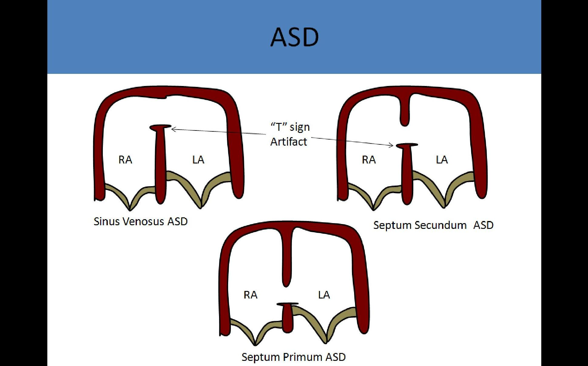
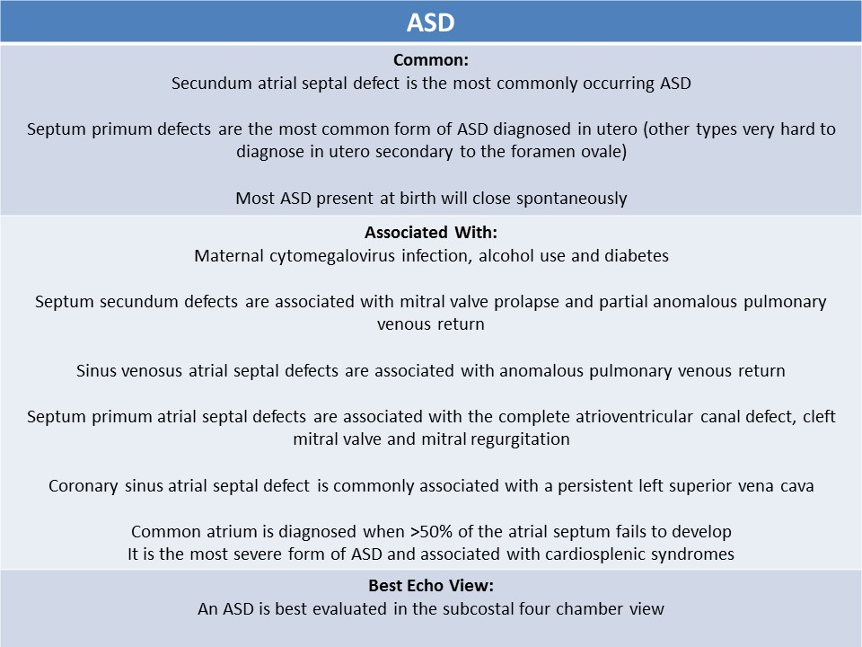
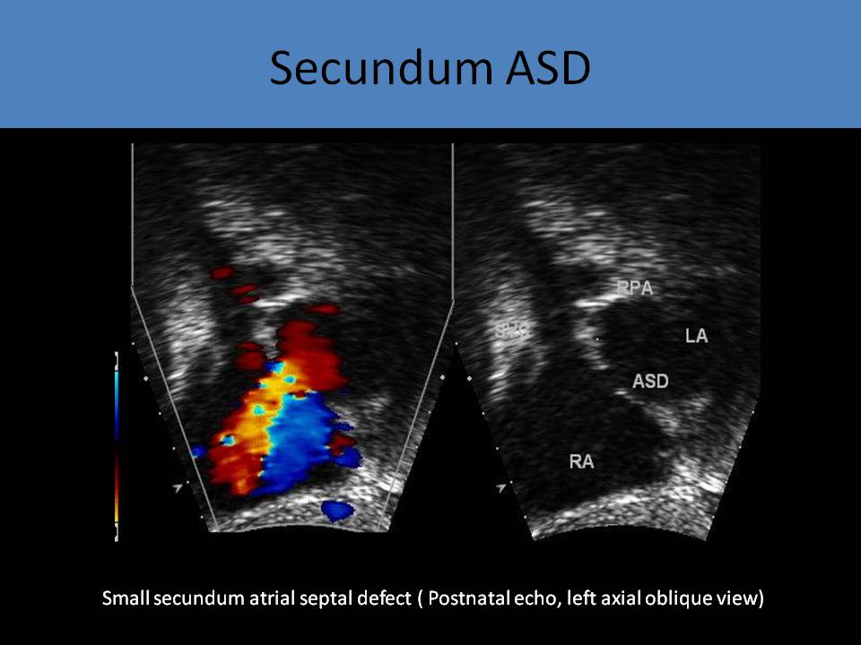
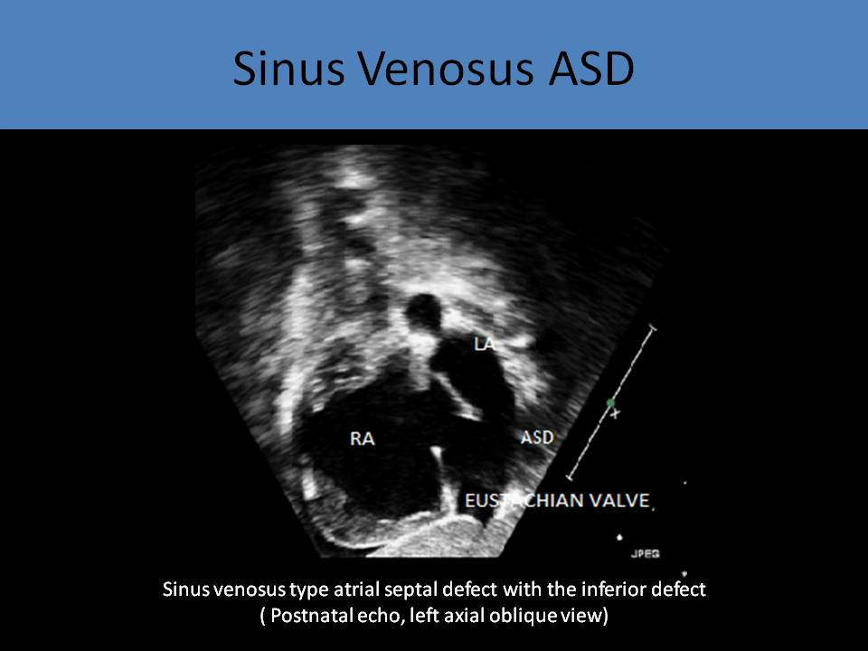
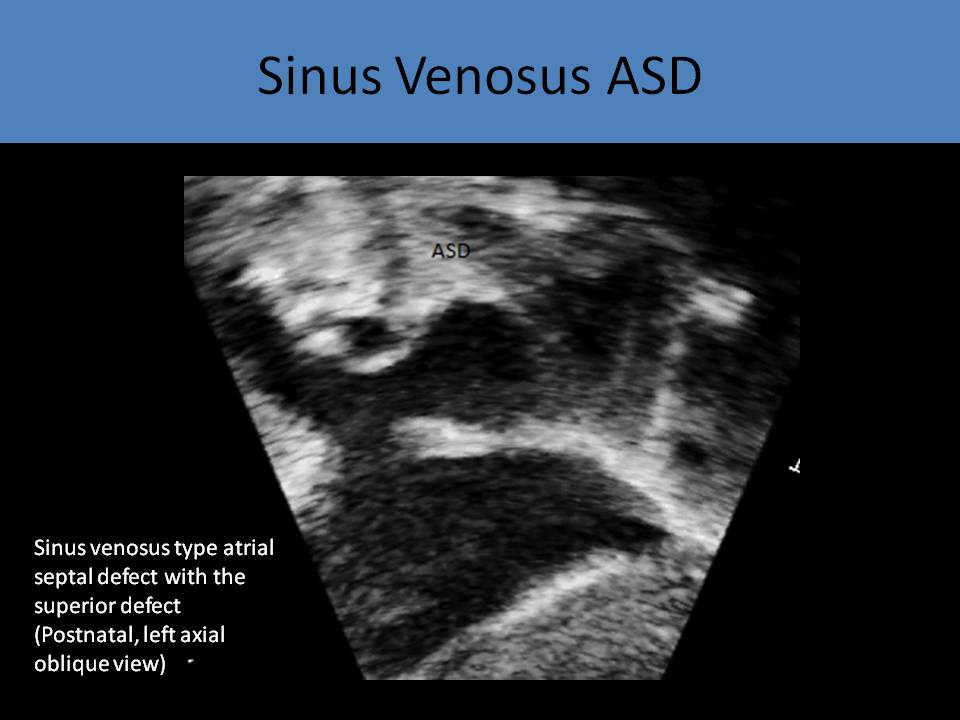

.jpg)
atrial septal defect
General Information:
- An abnormal communication between the atrial chambers
- One of the most common heart defects (about 10%)
- Hard to diagnose an atrial septal defect in a fetus secondary to the foramen ovale
- Foramen ovale should be open in a fetus with right to left shunt flow
- An ASD is best evaluated in the subcostal four chamber view
- Associated with many fetal syndromes including: Holt-Oram syndrome( short limb syndrome), Ellis van Creveld, Patau Syndrome ( trisomy 13), Cat-Eye Syndrome, Kabuki Syndrome, Lutembacher Syndrome, Pierre Robin Syndrome, Scimitar Syndrome, Ehlers-Danlos Syndrome
- Approximately 60% of ASD present at birth will close spontaneously
- The remaining patients can undergo corrective procedures: patch placement, insertion of amplatzer device,
Types:
- Secundum atrial septal defect:
- Most commonly occurring ASD
- Failure of the septum primum covering
- Can be multiple, various positions
- Associated with mitral valve prolapse and partial anomalous pulmonary venous return
- Sinus venosus atrial septal defect:
- Defect that is located in the superior portion of the atrial septum
- Superior defect: the superior vena cava overrides the atrial septum, the defect sits at the origin of the right upper pulmonary vein, 80-90% are associated with partial anomalous pulmonary venous return
- Inferior defect: the defect sits at the junction of the inferior vena cava and the atrium, less common than the superior defect
- Primum atrial septal defect
- Defect of the lower portion of the atrial septum
- Adjacent to the atrioventricular valves
- Associated with the complete atrioventricular canal defect, cleft mitral valve and mitral regurgitation
- Most common form of ASD diagnosed in utero (other types very hard to diagnose in utero)
- Coronary sinus atrial septal defect:
- Least common type
- Unroofed coronary sinus
- Occurs at the confluence of the coronary veins
- Partial or complete unroofing of the tissue separating the coronary sinus from the left atrium
- Coronary sinus becomes dilated
- Commonly associated with a persistent left superior vena cava
- Associated with cyanosis after birth
- Common atrium
- >50% of the atrial septum fails to develop
- Most severe form of ASD
- Associated with heterotaxy syndrome
- Atrial septal defect is larger than aorta
- The oxygenated blood from the ductus venosus flows through the inferior vena cava and then flows though the foramen ovale to the left heart
- Increased pressure in the left atrium pushes the flap of the foramen ovale closed
- The predominant shunt is left to right due to higher left atrial pressure and the degree of shunt flow is determined by the size of the ASD and right and left ventricular compliance
- Leads to volume overload of the right atrium and the right ventricle with increased pulmonary blood flow
- Patients with uncomplicated ASD do not have symptoms
- Pulmonary hypertension is more common in adults
- Due to increased pulmonary vascular resistance, intracardiac shunt can be reversed (right to left)
 


